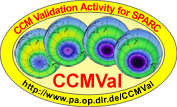

The BADC is developing a questionnaire with the CCMVal team to harvest model metadata for each of the participating models in the CCMVal-2 chemistry climate model intercomparison project. The questionnaires have been built using survey monkey and I have placed copies of them here for metaforians to have a look at and play with. I have found the survey monkey interface very intuitive to use and I was able to build the questionnaires below very quickly which was good for us at the BADC because we needed to have something working now. They are still in progress documents awaiting the next iteration with the CCMVal team.
To complete the CCMVal-2 questionnaire please follow the "Link" to each part. You can look at a "PDF" of the questions in each part to help you formulate your responses before you begin and also "View" the responses that have been collected. You will be directed back to this page after completing each part of the questionnaire.
It is possible to come back to any part of the questionnaire and edit your responses providing the questionnaire is accessed from the same computer and cookies have not been cleared. If this is not practical for you then links to the questionnaire can be sent to you in an email, you will then be able to re-access the survey from any computer. Please contact Charlotte if you require the email option.
|  | Link to the Questionnaire | PDF of the Questionnaire | Browse Questionnaire Responses | |
| BADC Information | Link | View | ||
| Atmosphere Model Structure | Link | View | ||
| Advection Scheme | Link | View | ||
| Radiation Scheme | Link | View | ||
| Convection Clouds & Microphysics | Link | View | ||
| Aerosols | Link | View | ||
| Surface Processes | Link | View | ||
| Dissipation | Link | View | ||
| Physical Boundary Conditions | Link | View | ||
| Gravity Wave Parameterisation | Link | View |